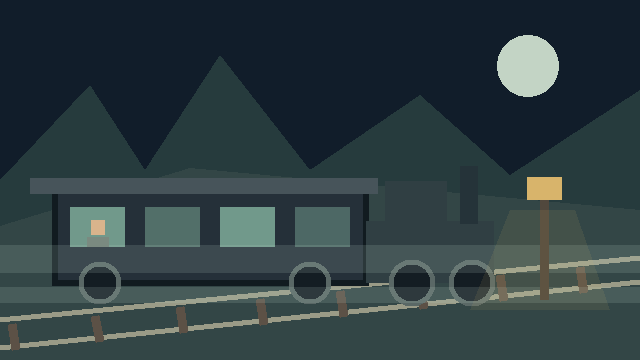

Vale do Cedro, 1998Sintonizando…
FREQUÊNCIA ZERO Capítulo I · O trem das 03h17

O eco da plataforma
O pátio de serviço
● Você · ◆ Vigia · ▒ Cobertura · ░ Área observada · ▣ Registro · ↩ Saída · ■ Obstáculo
A subestação silenciosa
● Você · ◇ Eco · ■ Obstáculo · ↩ Saída · ! Pulso anunciado
WASD/setas andar · Shift correr · C furtivo · E interagir/sentar · J diário · M mapa